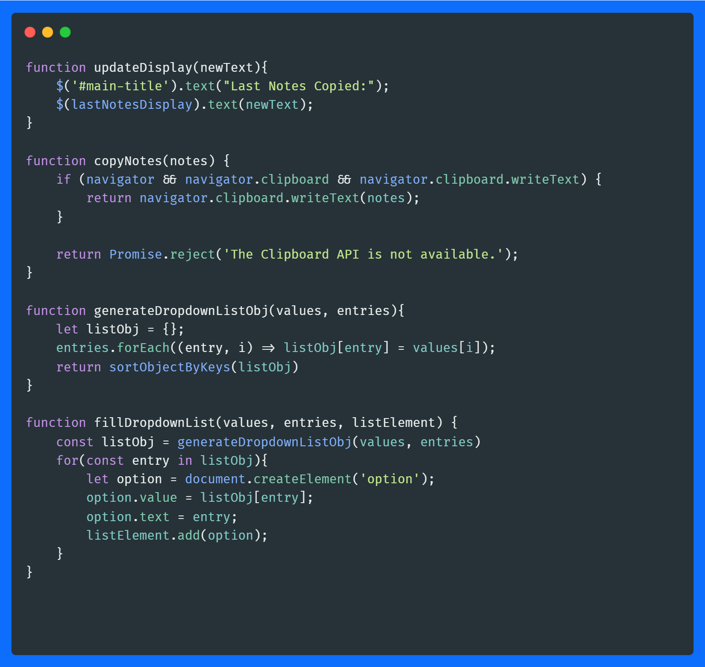
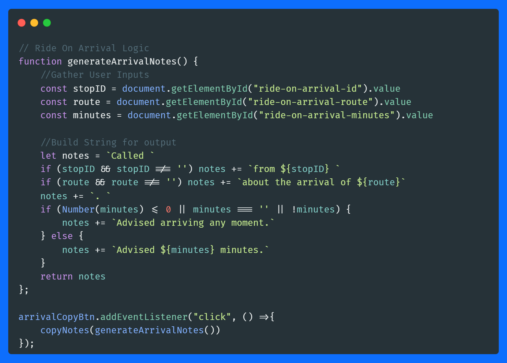
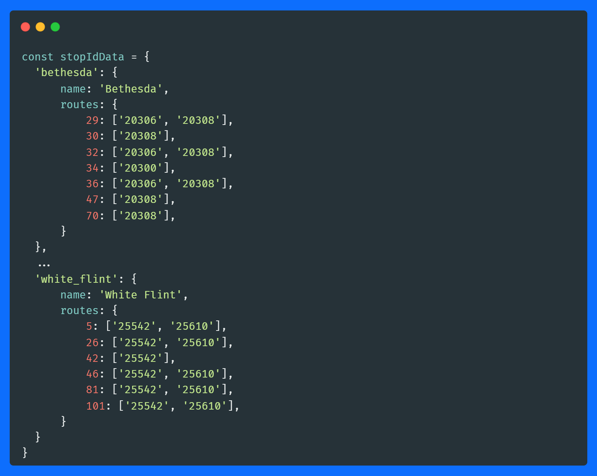
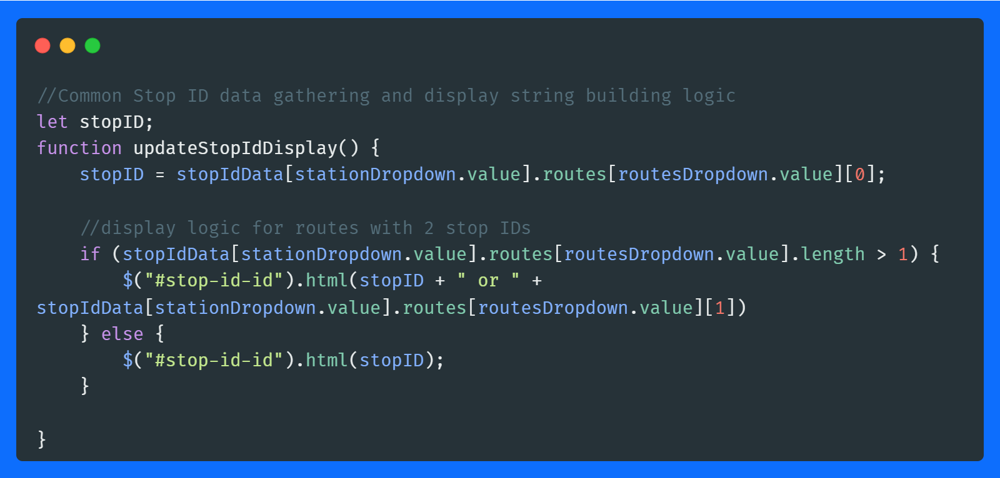

This was my first project after learning Bootstrap 5. It served as a chance to reinforce what I learned about Bootstrap, as well as good practice with working with the DOM and maninpulating objects and arrays in JaveScript.
The basic idea leveraged common functions, like copying data to the clipboard, updating the users display, and building list. From there I built functions to generate & format the proper data and notes, and passed them.
Some sections were fairly straight forward, simply grabbing user inputs, and forming a string around them
Some required accompanying data to build the notes for the user, or provide them information. All data was stored in objects, some nested (like the stop ID locator.)
Then the ojects were cross-referenced to output to correct data.
